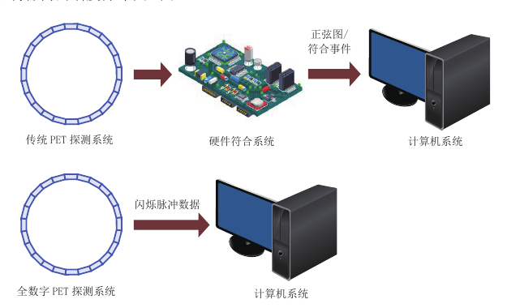
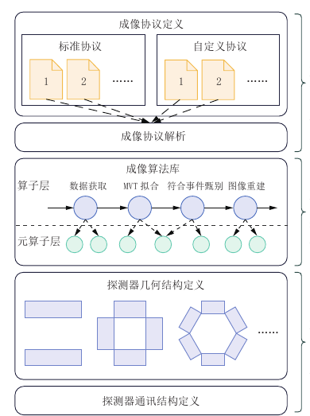

Building PET as a Software Platform: How PnI Makes Imaging Modular
A PET image is not photographed directly by the detector. The system estimates the time, energy, and position of events from vast numbers of scintillation pulses; pairs nearly simultaneous events; applies attenuation, scatter, and random corrections; and finally reconstructs a radiotracer distribution. A choice at any stage can alter the image.
Conventional systems often shape signals and identify coincidences in hardware, sending list-mode or sinogram data to the computer. This is efficient and stable, but the raw information has already been compressed. Researchers may be unable to revisit a pulse model or coincidence definition without changing the electronics—or at all.
Keep the information in software first

All-digital PET transfers digitized scintillation pulses to the computer, where pulse fitting, event selection, and image computation can be performed in software. The same acquisition can be analyzed repeatedly with different parameters, and new algorithms can be tested on genuinely raw measurements.
Freedom does not automatically produce a reliable image. Larger data flows need clear input-output contracts; detectors with different shapes need a shared geometric description; acquisition, buffering, computation, and display must run in the right order. PnI is an architecture for organizing that complexity.
Three layers put change in the right place

- Imaging protocol layer: defines the sequence of operations, algorithms, and parameters for an imaging study;
- Imaging algorithm layer: provides replaceable modules for acquisition, pulse processing, coincidence, correction, and reconstruction;
- Imaging device layer: describes detector geometry, data formats, and communication so specific hardware can join a common workflow.
The protocol layer resembles an executable experimental recipe. A user can start with a standard protocol or define a new main and auxiliary workflow. If one step's output matches the next step's input, a correction can be replaced or a process rerun with different parameters without rebuilding the entire system.
The algorithm layer turns imaging into manageable building blocks, but modularity means more than storing programs in separate files. Data semantics, scheduling, and failure handling must also be defined. The device layer translates square panels, rings, and other geometries into relationships the upper layers understand.
Testing the foundation with an animal PET system
The paper uses the Trans-PET D180 all-digital animal scanner as a case study and evaluates it with methods related to NEMA NU 4-2008. Under the reported test and reconstruction settings, radial resolution at the center was 2.56 ± 0.04 mm with FBP. With 3D OSEM including point-spread-function modeling, central radial, tangential, and axial values were approximately 1.34, 1.35, and 1.64 mm.
Maximum absolute sensitivity at the center was 4.00 ± 0.02%. Peak noise-equivalent count rate changed markedly with phantom size: approximately 713, 207, and 47 kcps for mouse-, rat-, and monkey-like phantoms. Beyond any individual number, the test demonstrates whether protocol, geometry, correction, and reconstruction can remain connected through a full measurement workflow.
These metrics belong to the device, activity, protocol, and algorithm settings described in the paper and should not be compared in isolation. Openness is not automatic validity: every new module still requires independent validation and complete records of versions, parameters, and data flow.
From a closed pipeline to a research platform
Preserving pulse data moves the entry point of PET research backward from the finished image to the question of how signals are generated and interpreted. Electronics researchers can compare pulse reconstruction, mathematicians can change optimization objectives, AI methods can assist event selection or reconstruction, and medical and biological teams can define protocols around specific questions.
PnI's long-term value is reducing duplicated infrastructure across these fields. Shared device descriptions and data interfaces make algorithms easier to move between systems, while application-specific PET instruments can change geometry and workflow on a common digital foundation. Standardization and validation remain demanding, but the direction is clear: an instrument's capabilities need not be frozen when it leaves the factory.
This feature independently interprets and rewrites the review “All-Digital PET Imaging Software Based on Plug and Imaging” by Ximeng Li, Qingguo Xie, and Lin Wan. The Chinese-language article appeared in CT Theory and Applications, 2024, 33(4), 433–447. DOI: 10.15953/j.ctta.2024.013.